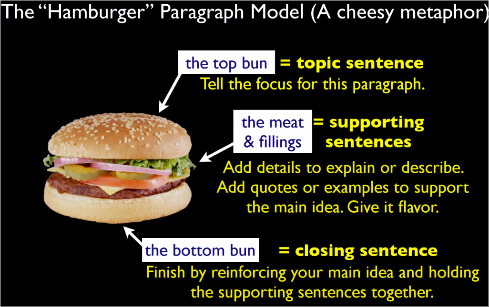
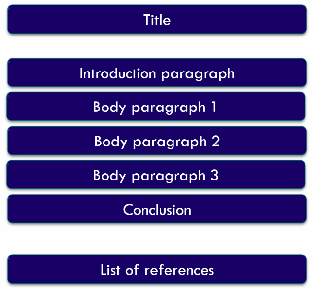

Academic Writing
Table of Contents
1 Academic Style
formality, use of academic phrases.
1.1 Characteristics of academic texts
1.1.1 over all
- standard structure, conventionalized
- References
- Boring layout
- Formal language; no errors, complete sentences and well considered arguments
- Objective and factual;
there could be personal opinion, but the way these opinions are presented is impersonally E.g. instead of I think this is ridiculous it would be this does not seem the right conclusion
1.2 In academic writing style:
- references have to be made
- often a lot of uncertainties are present; could mean, this might be the solution etc.
- the phrases: prof. X states that.. not "…", he says.
- Common problem words practice here
2 Quoting
referring and avoiding plagiarism.
2.1 why to refer to other articles?
- to explain what we know about the topic; summary of the topic(ie what other have done)
- quote reporting verbs that are of importance; provide, offer, have been done, have studied
- to use as a starting point for a discussion or experiment.
- to give definitions and facts; to show that you(ie researcher) have the data and references and you didn't made things up.
2.2 in which parts of the text do you refer to other articles
general basic/standard format of academic texts; see Structure:
2.3 how do you refer to other articles?
referring to articles should be made easy for people to find them. general referencing style:
- in-text references; ex
- referring; IEEE style: [1] or Harvard style: (NAMEOFAUTHOR YEAR) - common in introduction
- paraphrasing where the author is part of the sentence; Smith (2013) concludes … - quite common and you can go into details if needed.
- change the diction of the original text; but not the keywords(ie authors' names etc)
- change the structure; ex sentence order
- keep the meaning
- quoting; Smith (2013) says that "…" - going in more details. General facts about a topic don't yhave to be quoted.
bibliography; what info you need to find in a book or article? - with page #s and authors' names
is meant pre-internet times.
2.4 Academic research/papers
- always start with introduction, literature review(previous work or background) and then their work.
3 Structure
introduction, thesis statement and paragraph statement. There is a basic/standard format of academic texts:
3.1 I introduction
you may refer to many/certain examples
3.2 M methods;
present your methods, you might not have references, unless yours based on done methods
3.3 R results/experiment section;
usually don't have many references; since here you describe the results and experiments of your research.
3.4 a
3.5 D discussion + Conclusion;
you mainly return to the referred studies mentioned in the introduction; so can be less precise.
4 Linguistic Accuracy
grammar, vocabulary and punctuation
5 Clarity of Formulation
linking language and clauses combining
6 Paragraphs
6.1 what is a paragraph?
- a unit of a text that's recognizable; in terms of layout and argumentation.
- in each paragraph the writer discusses certain topic, and moving from one to the other represent the transition between topics.
6.1.1 layout
- each paragraph starts with a tab; indentation.
- first sentence is the topic sentence; which is the main theme/goal of the paragraph.
- rest of the paragraph provides the argumentation, examples or evidence of the topic sentence.
6.2 why?
- to no overwhelm the reader
- the writer breaks down their idea into several paragraphs to make it easier to read
- as a result the reader stays well informed of the topic the writer is conveying.
- e.g. after introducing a topic in the topic sentence, then the writer explains more about the topic which helps the reader to grasp the idea thoroughly.
- ending words, such as lastly, are used to inform the reader that they've reached the final paragraph, thus there must not be additional ones
6.3 how to write good paragraphs?
writing can be messy and differ among writers. For each paragraph you can:
6.3.1 main
- decide on what idea or topic it will be
- then, again, in the sentences that follow, shed more light on the said topic
present information in order
- logical order; eg Meditation helps mental health. It makes you become more relaxed and focused. Moreover, ….., also.. NOTICE THE LINKING WORDS
- chronological order; eg In the 1960s the software crisis rose in the computer industry. The most noticeable example of this crisis was the IBM's OS/360, it was expected in 1966; a year after many of IBM's system/360 were sold. And it was not released until 1968.
these orders styles you can follow from the article
after you've written and followed the structure above, go back and read your sentences to check whether you've actually conveyed the message you intended to.
6.3.2 hamburger structure!
the structure of paragraphs has been compared to the hamburger's. Since you have the topic, detail and conclusion sections; as discussed here.

6.4 structure of the final assignment

7 Assignments
general info about the assignment
7.1 DONE ass1
summary of one article; third-person perspective. The whole text is referenced; or refer to what it was referred to in that article
7.2 ass2
7.3 TODO ass3
some references in the introduction can be added to refer to what had been done. In the body, needs to be a comparison or discussion of all the 3 chosen academic articles, which means there should be references. In the conclusion you summarize so no need for new references. See the needed structure of this assignment.